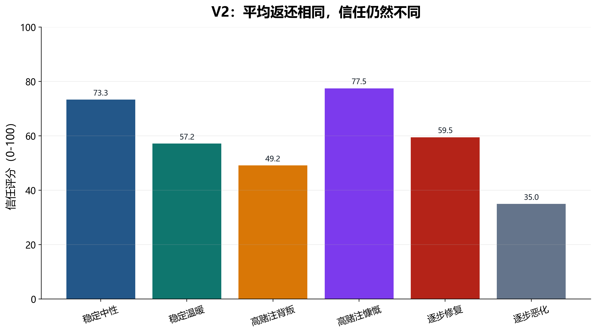
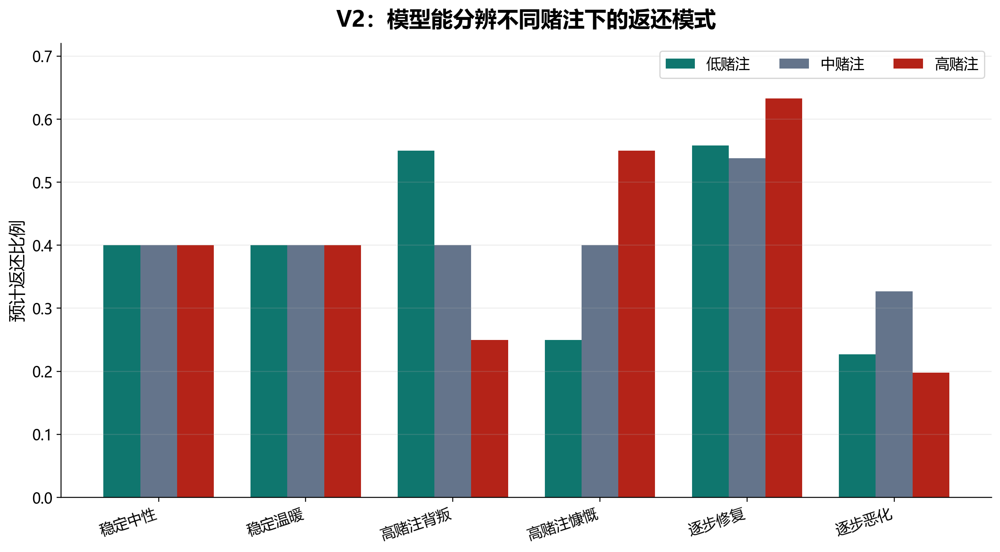
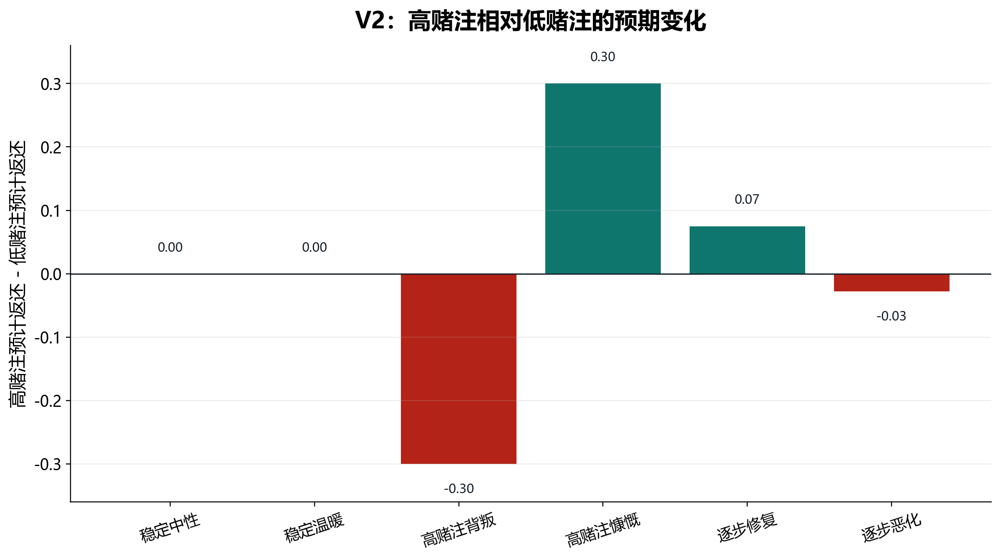

This is the controlled follow-up to v1. V1 showed that trust_rating closely tracks observed return. V2 keeps the same partner-type language as v1, but implements average-return-controlled variants. Every partner type has exactly the same observed average return, 0.40, while the pattern of returns differs across stake and time.
Successful calls: 36 / 36.
V2 控制所有条件的平均返还约为 0.40，检验模型是否只是追踪 average payoff，还是能识别 stake-specific policy 和时间趋势。
6 policy conditions × 6 repetitions = 36 runs；成功解析 36/36。每个 run 一次性呈现 8 轮历史，并直接询问 low / medium / high 三种 stake 下的预测和投资。
| 项目 | 具体操作 |
|---|---|
| 投资规则 | low stake 最大投资 4；medium 最大投资 7；high 最大投资 10；投资乘 3 后交给 partner。 |
| 历史呈现 | 每轮以自然句呈现 stake、partner message、你投资多少、partner 收到多少、返还多少。模型看的是 token 数，不是直接给出的 return_fraction 表。 |
| 平均返还控制 | 所有条件的研究者计算平均返还均控制在 0.40。 |
| probe 方式 | prompt 明确要求模型分别预测 low / medium / high stake 的返还比例，并分别给出投资额。 |
| 条件/因素 | 取值 | 设计目的 |
|---|---|---|
| policy condition | stable_neutral | 返还稳定 0.40，中性语言。 |
| policy condition | stable_warm | 返还同样稳定 0.40，但语言更温暖。 |
| policy condition | high_stake_betrayal | 低赌注返还高，高赌注返还低；平均仍为 0.40。 |
| policy condition | high_stake_generous | 低赌注返还低，高赌注返还高；是 high-stake betrayal 的镜像。 |
| policy condition | repairing_trend | 前期低返还，后期修复和改善。 |
| policy condition | declining_trend | 前期高返还，后期逐步恶化。 |
| 变量 | 类型/范围 | 含义 |
|---|---|---|
global_trust_rating | 模型输出，0-100 | 对 partner 的总体信任评分。 |
message_credibility | 模型输出，0-100 | 认为 partner 语言信息可信的程度。 |
policy_structure_rating | 模型输出，0-100 | 认为 partner 行为有稳定策略结构的程度。 |
predicted_return_fraction_if_low/medium/high_stake | 模型输出，0-1 | 模型对三种 stake 下返还比例的条件预测。 |
investment_if_low/medium/high_stake | 模型输出，整数 | 模型在三种 stake 条件下分别愿意投资多少。 |
predicted_high_minus_low | 分析指标 | 高赌注预测返还减低赌注预测返还，用来判断模型是否识别 stake-contingent policy。 |
conditions/policy_points.json 读取 6 个 policy conditions。JSON schema 包括 global_trust_rating, message_credibility, policy_structure_rating, 三个 predicted_return_fraction, 三个 investment_if_*, confidence, brief_reason。
V2 把所有条件的平均返还都控制在 0.40 左右。结果显示，模型并不是只看平均收益：它能根据 stake-specific pattern 和时间趋势调整信任、条件预测和投资策略。
模型预测 high stake 返还比 low stake 低 0.30，并把 high-stake 投资降为 0。
high-stake generous 中，模型预测高赌注更值得投，并给 high stake 满额投资。
尽管平均返还仍为 0.40，declining trend 的信任评分最低。



| 条件 | 平均返还 | 信任 | 预测 low | 预测 high | high-low | low 投资 | high 投资 |
|---|---|---|---|---|---|---|---|
稳定中性stable_neutral | 0.4 | 73.33 | 0.4 | 0.4 | 0 | 4 | 10 |
稳定温暖stable_warm | 0.4 | 57.17 | 0.4 | 0.4 | 0 | 4 | 10 |
高赌注背叛high_stake_betrayal | 0.4 | 49.17 | 0.55 | 0.25 | -0.3 | 4 | 0 |
高赌注慷慨high_stake_generous | 0.4 | 77.5 | 0.25 | 0.55 | 0.3 | 0 | 10 |
后期修复repairing_trend | 0.4 | 59.5 | 0.558 | 0.633 | 0.075 | 4 | 10 |
后期恶化declining_trend | 0.4 | 35 | 0.227 | 0.198 | -0.028 | 0 | 0 |
V2 的关键发现是：平均收益相同并不意味着模型给出相同信任或投资。它能识别高赌注背叛、后期修复和后期恶化。不过，V2 的 probe 直接要求模型分别预测 low / medium / high，容易 cue 它做策略拟合。V3 因此加入噪声，并正交操纵语言框架，测试语言是否有独立影响。